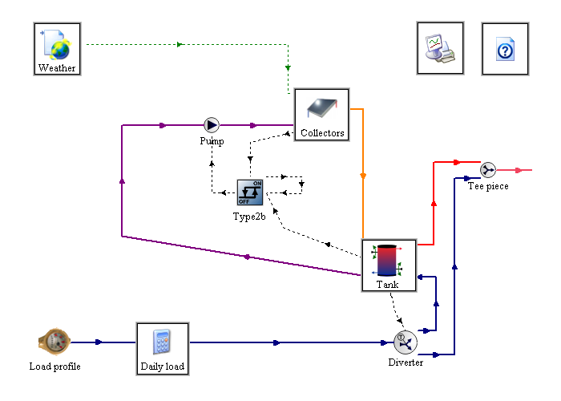

|
Solar Domestic Hot Water System A Simple TRNSED Demo Contents
Installing and Launching the programThe setup program has copied all the required files in the destination directory you selected. You can launch the demo by running "SDHW-TRNSED.exe". Once TRNSED is launched, you should click on OK to close the welcome dialog box. The program will automatically open the SDHW-TRNSED.trd file. What is TRNSYS? What is TRNSED?TRNSYS ('tran-sis') is a TRaNsient SYstems Simulation program with a modular structure. It recognizes a system description language in which the user specifies the components that constitute the system and the manner in which they are connected. The TRNSYS library includes many of the components commonly found in thermal and electrical energy systems, as well as component routines to handle input of weather data or other time-dependent forcing functions and output of simulation results. The modular nature of TRNSYS procides the program with tremendous flexibility, and facilitates the addition to the program of mathematical models not included in the standard TRNSYS library. TRNSYS is well suited to detailed analyses of any system whose behavior is dependent on the passage of time. TRNSYS has become reference software for researchers and engineers around the world. Main applications include: solar systems (solar thermal and photovoltaic systems), low energy buildings and HVAC systems, renewable energy systems, cogeneration, fuel cells. For more information, please visit the TRNSYS website. TRNSED is a stand-alone visual interface for TRNSYS. It can be freely redistributed and allows TRNSYS users to share their work with other persons who do not own a TRNSYS license or who do not understand all the details involved in a simulation. Simulated System The Solar Domestic Hot Water (SDHW) system consists of solar collectors, a storage tank with auxiliary heating, a controller for the solar loop and some piping equipment. The simulation also includes Utility Components (Weather Data and Solar Radiation Processor, Load, etc.). Simulation ParametersThe TRNSYS models are often very detailed and require some technical knowledge to modify their parameters. The aim of this TRNSED application is to allow users to modify a few global parameters (system location, yearly load, rated power of the different components) in order to get a feeling on how the system works without having to understand the detailed models. The detail level of required parameters can be adapted to the intended user of the simulation. Simulation outputsThe main simulation results are plotted during the simulation, and 4 output files are also created: SDHW-TRNSED.plt and .pl2 present a printed version of all the variables plotted by the online plotter. "daily.txt" and "Totals.txt" have integrated data. Setting Up a SimulationThe simulations are set up entirely from input fields in the different tabs. In numerical value fields, you will type the value of a certain parameter, say the collector area, or the slope of the collectors. TRNSED will try to detect if a parameter that you have typed is out of range and warn you accordingly. Launching a SimulationTo launch a simulation, select “Calculate” from the TRNSYS menu at the top of the screen or press the F8 key. After a moment, an online display of system variables will pop up and your simulation will begin to run. At the end of the simulation, a message will pop up saying that calculations have completed, do you wish to exit the online plotter. If you click yes, the program will revert back to its input screen. If you click no, the online plotter will stay visible until you select “Exit Online Plotter” from the “Calculations” menu at the top left of the screen. Information on viewing and interpreting results is included in the "Viewing and Interpreting Results" section of this document. Viewing and Interpreting ResultsThere are a few different ways that you can see results from a TRNSYS simulation. Using the online plotterOnce a simulation has completed, you can click “No” when asked whether you want to exit the online plotter. With the online plot still displayed, hold down the shift key and move the mouse along the x-axis and the names of the displayed variables (at the top of the plot) will be replaced by their values. If you press CTRL-SHIFT while moving the mouse, only the values occurring at a time step will be displayed (i.e. interpolation will be turned off in the online plotter). If the plot is too complex, you can “switch off” variables from the display by clicking on their names. You might notice that some variables are switched off in the default configuration to make the plot more readable. They are greyed out on the display. Just click on a variable name to activate it again. You can also zoom in the plots by selecting a rectangular area with the mouse (click on the plot to select the upper left corner and then drag to define the rectangle. The zoom window is created when you release the mouse button). In the zoom window, you can display the value of all variables for a given time by pressing shift and moving the mouse. If you click on an axis (time, left or right axis) a control box will popup where you can modify the axis limits. You can also change the background color of the plot between black and white using the “Plot Options” menu. Additional output filesThe plotted values are also printed to text files (.plt an .pl2, located in the destination directory). You can import those text files in any post-processing program for further analysis. Daily integrated values and wimulation totals are also available in "Daily.txt" and "Totals.txt". Troubleshooting the simulationIf ever you run a simulation and TRNSYS encounters a problem, it will display the message that “an error was found in the deck, please check the listing file for more information.” The deck is the TRNSYS input file and the listing file (.lst) is generated every time the TRNSED demo is run. There is a large amount of complex information in the listing file but the actual errors that caused the simulation to stop are likely to be printed at the very end of the file. The simulation log file offers a more condensed version of error messages and warnings. You can view the log file by selecting "Windows / Log". Most errors come from bad parameters or bad a parameter combination. You can try to solve the problem by reverting the last parameter change you made.
|